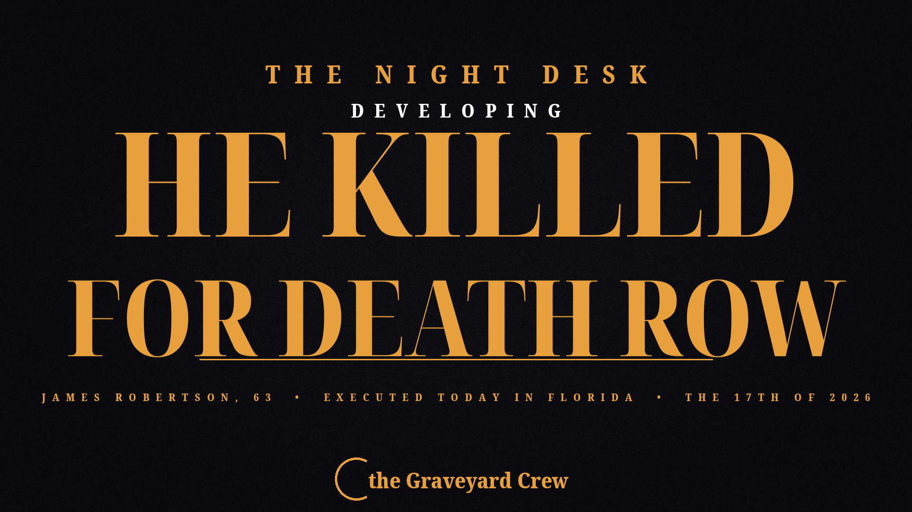

October 13, 2026
James Robertson Executed in Florida After Killing His Cellmate to Get on Death Row

Headline card by The Night Desk
James Robertson Executed in Florida After Killing His Cellmate to Get on Death Row
RAIFORD, Fla. — Florida executed James Robertson, 63, by lethal injection at noon on Tuesday, Oct. 13, at Florida State Prison, for a murder he confessed he committed for one reason: to be sent to death row.
Robertson is the 17th person executed in Florida in 2026.
The murder he planned
On Dec. 10, 2008, Robertson tied several socks together into a garrote and strangled his cellmate, Frank Hart, to death. According to court records, Robertson confessed there had been no provocation or fight — he had planned the murder so he would land on death row.
Robertson had been cycling in and out of prison since he was 17, on burglary and assault charges across Orange, Dixie, Bradford, and Charlotte counties. He was convicted of attempted murder of a cellmate in 1997. After nearly 30 years in prison, he said he was tired of his situation.
After Hart's killing, he was charged with attempted second-degree murder for stabbing a prison guard in 2011 — and told authorities he would kill again unless he was put on death row.
No appeals, no lawyer
Robertson pleaded guilty to first-degree murder for Hart's death and waived his jury penalty phase. He was sentenced to death in 2012.
After his death sentence was affirmed on mandatory direct appeal, Robertson waived his right to any further postconviction proceedings and fired his attorney. No appeals were filed in his case after that.
The second execution that didn't happen
Today was initially scheduled to be a double execution day in Florida. A second execution — William Lee Thompson, 74, at 6 p.m. — was canceled last week when Gov. Ron DeSantis withdrew Thompson's death warrant on Oct. 8.
Thompson was convicted of the 1976 Miami kidnapping, rape, and murder of 23-year-old Sally Ivester. His attorneys argued in an emergency filing that his mental capacity, including possible dementia, meant he could not be executed under Florida law. DeSantis appointed three psychiatrists to evaluate Thompson but gave no reason for withdrawing the warrant.
This is a developing story. The Night Desk will update as official confirmation and witness accounts come in.
Source: Sarasota Herald-Tribune
Source: Sarasota Herald-Tribune — read the original report
← Back to latest stories